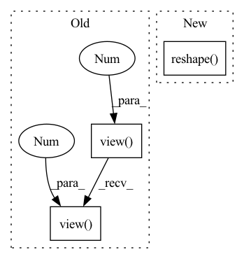

Pattern ID :726
Before Change
// if no NaNs for padding varying trial lengths we can batch the computation
if not torch.isnan(x).any():
trial_embeddings = self.trial_net(x.view(batch * permutation_dim, -1)).view(
batch, permutation_dim, -1
)
combined_embedding = self.combining_function(trial_embeddings, dim=1)
trial_counts = torch.ones(batch, 1, dtype=torch.float32) * permutation_dim
// otherwise we need to loop over the batch to account for varying trial lengthsAfter Change
// Get number of trials from non-nan entries
num_batch, max_num_trials = x.shape[0], x.shape[self.aggregation_dim]
nan_counts = (
torch.isnan(x)
.sum(dim=self.aggregation_dim) // count nans over trial dimension
.reshape( -1) [:num_batch] // counts are the same across data dims
.unsqueeze(-1) // make it (batch, 1) to match embeddings below
)
// number of non-nan trialsIn pattern: SUPERPATTERN
Frequency: 4
Non-data size: 3
Instances Fragment ID: 2410116
Project Name: mackelab/sbi
Commit Name: 3831fd6d5fda0ca050db8c54868ed30558451042
Time: 2023-03-01
Author: jan.boelts@tum.de
File Name: sbi/neural_nets/embedding_nets.py
M Class Name: PermutationInvariantEmbedding
N Class Name: PermutationInvariantEmbedding
M Method Name: forward(2)
N Method Name: forward(2)
M Parent Class: nn.Module
N Parent Class: nn.Module
M File Name: sbi/neural_nets/embedding_nets.py
N File Name: sbi/neural_nets/embedding_nets.py
M Start Line: 274
M End Line: 300
N Start Line: 279
N End Line: 306
Before Change
def forward(self, x):
b, c, h, w = x.shape
x = x + self.attn(self.norm1(x.view( b, c, -1 ) .transpose(-2, -1)).transpose(-2, -1).view(b, c, h, w))
x = x + self.ffn(self.norm2(x.view( b, c, -1 ) .transpose(-2, -1)).transpose(-2, -1).view(b, c, h, w))
return x
After Change
b, c, h, w = x.shape
x = x + self.attn(self.norm1(x.reshape(b, c, -1).transpose(-2, -1).contiguous()).transpose(-2, -1)
.contiguous().reshape(b, c, h, w))
x = x + self.ffn(self.norm2(x.reshape( b, c, -1) .transpose(-2, -1).contiguous()).transpose(-2, -1)
.contiguous().reshape(b, c, h, w))
return x
Fragment ID: 2410118
Project Name: leftthomas/restormer
Commit Name: 24dcd377010cc831079023b52a73adcb9ad04e7b
Time: 2022-02-26
Author: leftthomas@qq.com
File Name: model.py
M Class Name: TransformerBlock
N Class Name: TransformerBlock
M Method Name: forward(2)
N Method Name: forward(2)
M Parent Class: nn.Module
N Parent Class: nn.Module
M File Name: model.py
N File Name: model.py
M Start Line: 57
M End Line: 58
N Start Line: 57
N End Line: 60
Before Change
return ord_prob.view(-1, ord_num, H, W)
ord_prob = F.softmax(C, dim=1)[:, 1, ::]
ord_prob = ord_prob.view(-1 , ord_num, H, W)
ord_label = torch.sum((ord_prob > 0.5), dim=1).view(-1 , 1, H, W)
return ord_prob, ord_label
After Change
return ord_prob
ord_prob = F.softmax(concat_feats, dim=1)[:, 0, ::]
ord_label = torch.sum((ord_prob > 0.5), dim=1).reshape( (N, 1, H, W))
return ord_prob, ord_label
Fragment ID: 2410124
Project Name: dontlovebugs/superviseddepthprediction
Commit Name: 07fe1714fc568b25bd80debe8dd3ab800ff576a8
Time: 2020-05-02
Author: wangxin_buaa@163.com
File Name: dp/modules/decoders/OrdinalRegression.py
M Class Name: OrdinalRegressionLayer
N Class Name: OrdinalRegressionLayer
M Method Name: forward(2)
N Method Name: forward(2)
M Parent Class: nn.Module
N Parent Class: nn.Module
M File Name: dp/modules/decoders/OrdinalRegression.py
N File Name: dp/modules/decoders/OrdinalRegression.py
M Start Line: 26
M End Line: 41
N Start Line: 28
N End Line: 45
Before Change
item_eb_hat = torch.sum(self.w[:, :self.seq_len, :, :] * u,
-1) // shape=(batch_size, seq_len, hidden_size*interest_num)
item_eb_hat = item_eb_hat.view(-1 , self.seq_len, self.interest_num, self.hidden_size)
item_eb_hat = item_eb_hat.permute(0, 2, 1, 3).contiguous()
item_eb_hat = item_eb_hat.view(-1 , self.interest_num, self.seq_len,
self.hidden_size) // [batch_size, num_interest, seq_len, hidden_size]
// [batch_size, num_interest, seq_len, hidden_size]
if self.stop_grad: // Clip signal for backpropagation, item_emb_hat is not included in gradient calculationAfter Change
item_eb_hat = torch.sum(self.w[:, :self.seq_len, :, :] * u,
dim=3) // shape=(batch_size, maxlen, hidden_size*interest_num)
item_eb_hat = torch.reshape( item_eb_hat, (-1, self.seq_len, self.interest_num, self.hidden_size))
item_eb_hat = torch.transpose(item_eb_hat, 1, 2).contiguous()
item_eb_hat = torch.reshape(item_eb_hat, (-1, self.interest_num, self.seq_len, self.hidden_size))
// [b, in, s, h] Fragment ID: 2410126
Project Name: hasai666/rec_pangu
Commit Name: edb52c9a2e35045250d5fda164df336768f37599
Time: 2023-03-24
Author: wangkai@fuzhi.ai
File Name: rec_pangu/models/layers/multi_interest.py
M Class Name: CapsuleNetwork
N Class Name: CapsuleNetwork
M Method Name: forward(4)
N Method Name: forward(4)
M Parent Class: nn.Module
N Parent Class: nn.Module
M File Name: rec_pangu/models/layers/multi_interest.py
N File Name: rec_pangu/models/layers/multi_interest.py
M Start Line: 102
M End Line: 172
N Start Line: 94
N End Line: 154